TSA is one of the premier STEM student organizations in the world, consisting of over 250,000 members across four countries and 48 states. Its rich history began in 1978 as the American Industrial Arts Student Association, before becoming the Technology Student Association in 1988. Now, TSA represents active advances in its field, providing members opportunities to competitively interact with diverse and developing fields. Consistent of a wide variety of specific competitions - its events - there's certainly no limit of what members can do in TSA. Read more about these events below.
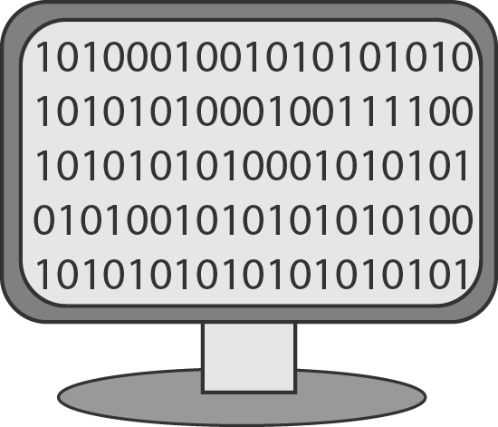
Coding
Participants (one [1] individual, or one [1] team of two [2] members, per chapter) respond to an annual coding-related design challenge by developing a software program that will accurately address an on-site problem in a specified, limited amount of time.
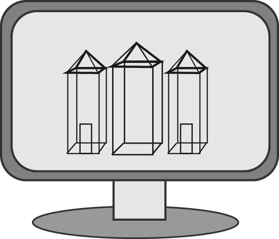
Computer-Aided Design, Architecture
Participants (two [2] individuals per state) use complex computer graphic skills, tools, and processes to develop representations of architectural subjects, such as foundation and/or floor plans, and/or elevation drawings, and/or details of architectural ornamentation or cabinetry.
Computer-Aided Design, Engineering
Participants (two [2] individuals per state) use complex computer graphic skills, tools, and processes to develop three-dimensional representations of engineering subjects such as a machine part, tool, device, or manufactured product.
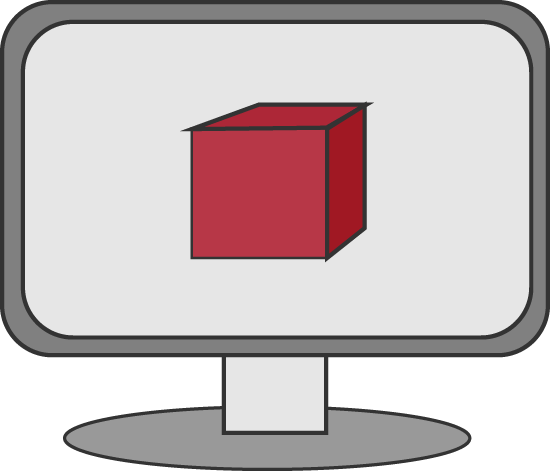
Computer Integrated Manufacturing (CIM)
Participants (one [1] team of two to six [2-6] members per chapter) design, fabricate, and use Computer Integrated Manufacturing (CIM) to create a promotional product that will showcase the current conference city and/or state.
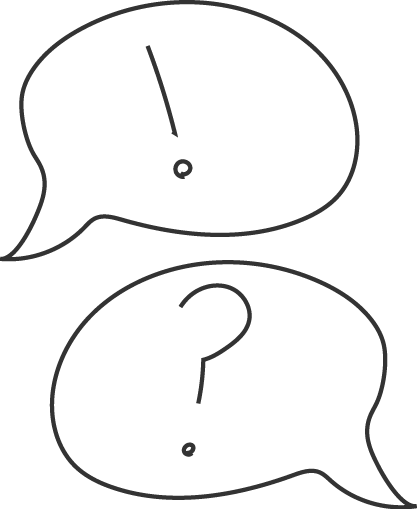
Debating Technological Issues
Participants (three [3] teams of two [2] members per state) work together to prepare for a debate against a team from another chapter. The teams will be instructed to take either the Pro or Con side of a selected subtopic.
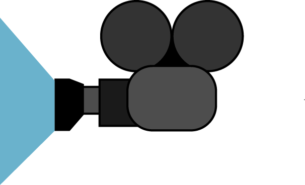
Digital Video Production
Participants (three [3] teams per state; an individual may participate solo in this team event) develop a public service announcement and a digital video (with sound) that focuses on the given year's theme.
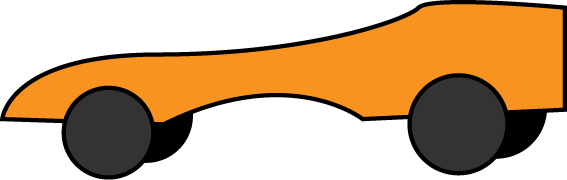
Dragster Design
Participants (two [2] individuals per chapter; one [1] entry per individual) design, produce a working drawing for, and build a CO2-powered dragster.
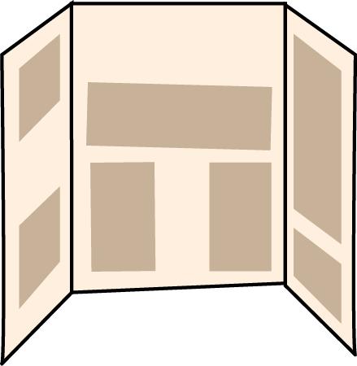
Engineering Design
Participants (three [3] teams of three to six [3 - 6] members per state) develop a solution to a National Academy of Engineering grand challenge that is posted on the national TSA website. The solution offered will be informed and designed by precise problem definition, thorough research, creativity, experimentation (when possible), and the development of documents and appropriate models (mathematical, graphical, and/or physical prototype/model). Semifinalist teams present and defend their proposed solution to a panel of judges.
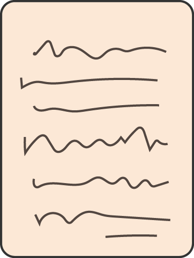
Essays on Technology
Participants (three [3] individuals per state) write a research-based essay (using two or more sources provided on-site) that makes insightful connections about a current technological topic.
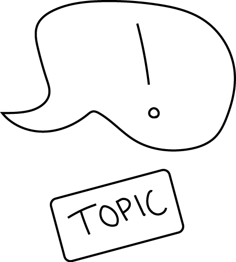
Extemporaneous Speech
Participants (three [3] individuals per state) verbally communicate their knowledge of technology or TSA subjects by giving a speech after having drawn a card on which a technology or TSA topic is written.
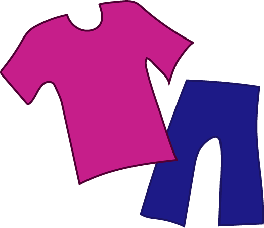
Fashion Design and Technology
Participants (three [3] teams of two to four [2-4] members per state) research, design, and create a portfolio and wearable prototype that reflect the current year's theme. Semifinalist teams participate in a presentation/interview in which they present their garment designs to judges.
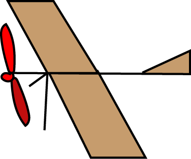
Flight Endurance
Participants (two [2] individuals per chapter; one [1] entry per individual) analyze flight principles with a rubber band-powered model aircraft.
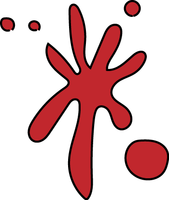
Forensic Science
Participants (one [1] team of two [2] members per chapter) take a written test of basic forensic science theory to qualify as semifinalists. Semifinalist teams will examine a mock crime scene and demonstrate their knowledge of forensic science and crime scene analysis. Students will be expected to survey the scene and use proper techniques to collect evidence from the mock crime scene. Students will then collect their data and perform a detailed written analysis of the crime scene.
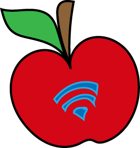
Future Technology Teacher
Participants (two [2] individuals per chapter) investigate technology education preparation programs in higher education and test their potential as a future technology educator.
Music Production
Participants (three [3] teams per state; an individual may participate solo in this team event) produce an original musical piece that is designed to be played during the National TSA Conference opening or closing general sessions.
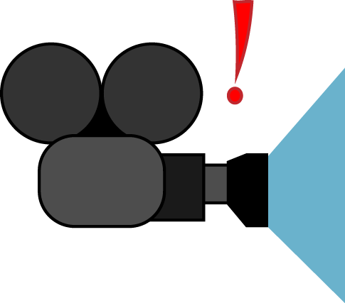
On Demand Video
Participants (one [1] team of two to six [2-6] members per chapter) write, shoot, and edit a 60 second video onsite during the conference.
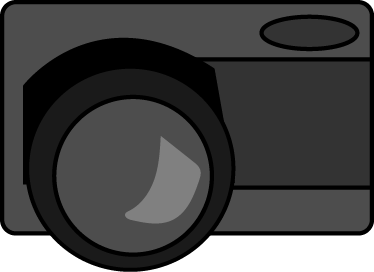
Photographic Technology
Participants (one [1] individual per chapter) demonstrate understanding of and expertise in using photographic and imaging technology processes to convey a message based on a theme. Semifinalists record images and then utilize graphic editing software to prepare a single final image as a solution to an onsite prompt.
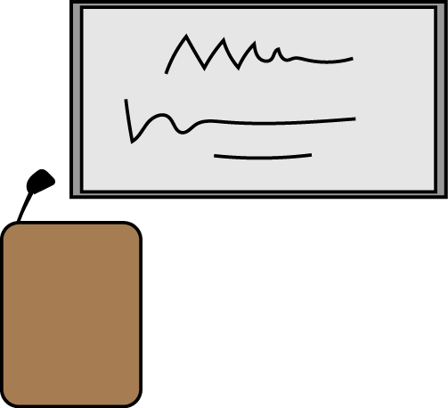
Prepared Presentation
Participants (three [3] individuals per state) deliver an oral presentation, using a digital slide deck, on a topic provided onsite.
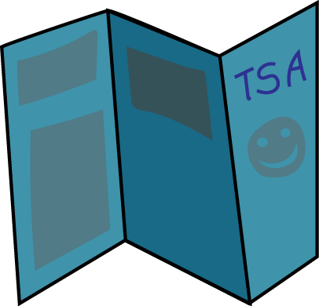
Promotional Design
Participants (three [3] individuals per state) use computerized graphic communications layout and design skills in the production of a promotional resource for TSA.
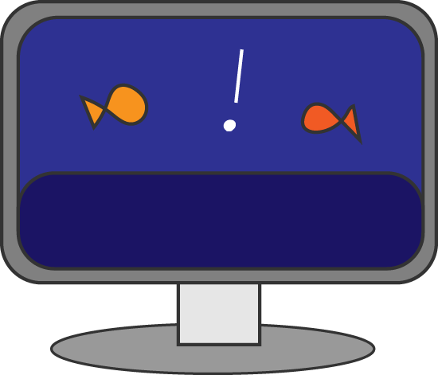
Scientific Visualization (SciVis)
Participants (three [3] teams per state; an individual may participate solo in this team event) use either 2D or 3D computer graphics tools and design processes to communicate, inform, analyze, and/or illustrate a STEM topic, idea, subject, or concept.
Software Development
Participants (one [1] team per chapter) use knowledge of cutting-edge technologies, algorithm design, problem-solving principles, effective communication, and collaborative teamwork to design, implement, test, and document a software development project of educational or social value.
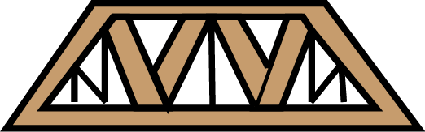
Structural Design and Engineering
Participants (one [1] team of two [2] members per chapter) work as a team to build a designated structure that is posted on the TSA website. Teams apply the principles of structural design and engineering through research, design, construction, destructive testing, and assessment to determine the design efficiency of the structure.
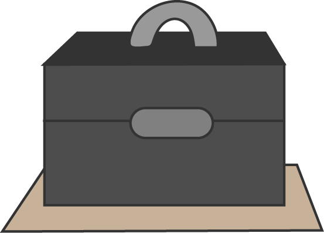
System Control Technology
Participants (one [1] team of three [3] members per state) work on site to develop a computer-controlled model-solution to a problem, typically one from an industrial setting. Teams analyze the problem, build a computer-controlled mechanical model, program the model, explain the program and mechanical features of the model-solution, and write instructions for evaluators to operate the device.
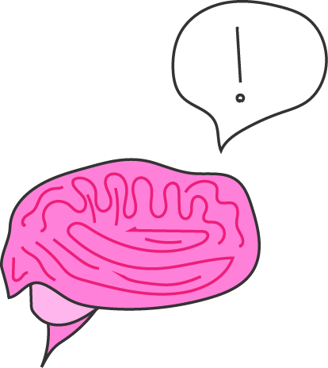
Technology Bowl
Participants (one [1] team of three [3] members per chapter) demonstrate their knowledge of TSA and concepts addressed in the technology content standards by completing a written, objective test; semifinalist teams participate in question/response, head to head team competition.
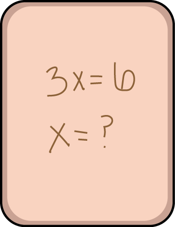
Technology Problem Solving
Participants (one [1] team of two [2] members per chapter) use their skills in problem solving to develop a finite solution to a problem provided on site.
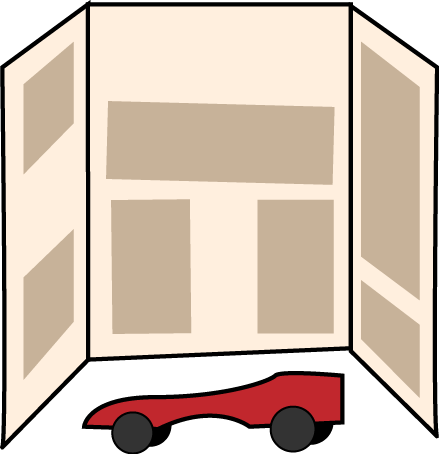
Transportation Modeling
Participants (one [1] individual per chapter) research, design, and produce a scale model of a vehicle that fits the annual design problem.
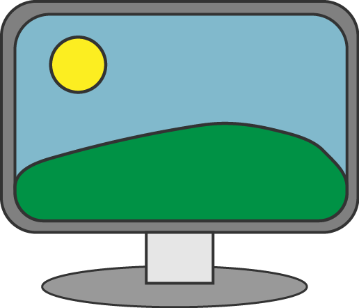
Video Game Design
Participants (three [3] teams per state) develop a game that focuses on the yearly theme. The game must have high artistic, educational, and social value and be interesting, exciting, visually appealing, and intellectually challenging.
Webmaster
Participants (one [1] team of three to five [3-5] members per chapter) design, build, and launch a website that features the school's career and technology/engineering program, the TSA chapter, and the chapter's ability to research and present a given topic pertaining to technology. Semifinalists participate in an onsite interview to demonstrate the knowledge and expertise gained during the development of the website with an emphasis on web design methods and practices, as well as their research for the annual design topic.
Event descriptions courtesy of TSAweb.org
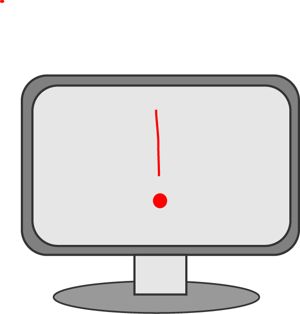
PA-Computer Systems Troubleshooting
Teams test their computer troubleshooting skills in a written exam, as well as an on-site portion. Skills in PC system assembly, software and hardware evaluation are crucial for success.
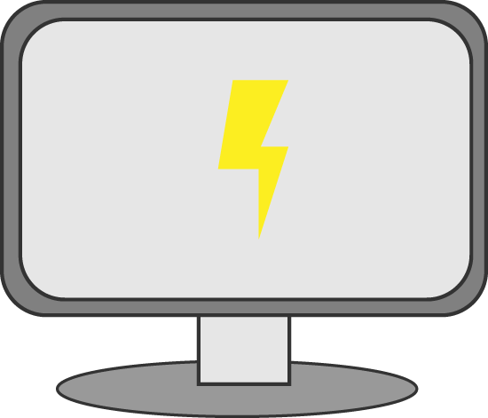
PA-Electronic Research and Experimentation
In this challenging event, teams research, design, and create their own electronic device. Teams produce comprehensive schematics for their devices, as well as develop a display and provide evidence of their experimentation.
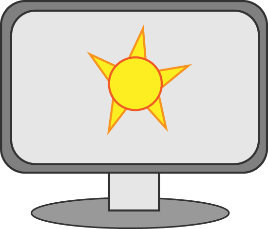
PA-Logo Design
Individuals design a logo for the next PA-TSA State Conference using computer graphics. Participants demonstrate skills in digital communications as well, as the event focuses heavily on the process of screen printing.
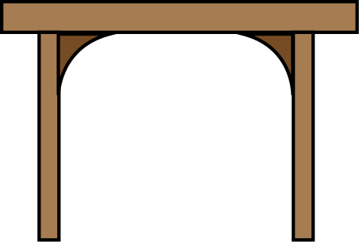
PA-Materials Processes
Materials Processes is an individual event that allows participants to display their fabrication and creative skills. Projects are graded on their proper usage of materials and design features, and workmanship of their product.
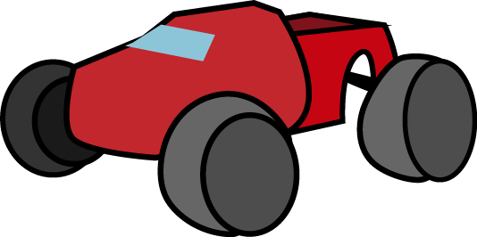
PA-R/C Off-Road Racing
Teams design and maintain a radio-controlled vehicle, and perform tasks whilst racing through an obstacle course. This event promotes teamwork, problem-solving and technical skills, and is especially fun for participants and viewers alike!
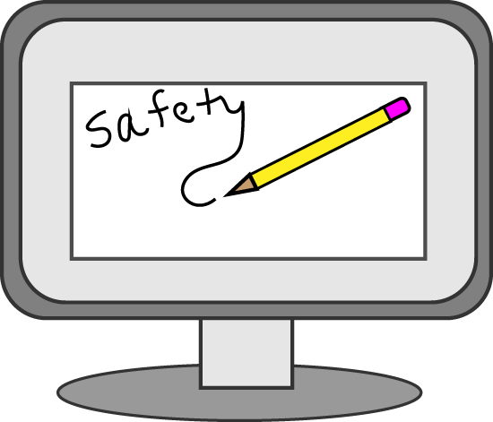
PA-Safety Illustration
Individuals create an original poster using computer graphics to promote an idea that pertains to "Safety First when using Technology". Competitors also submit an essay that explains and furthers the idea illustrated in their poster.
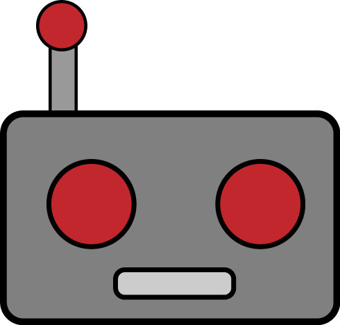
PA-Robotics
Teams use VEX robotics kits to design, build, and code a robot which must complete a specific annually-changing course. Teams also submit documentation of their design process. This event is especially valuable in the context of a rapidly expanding robotics field worldwide.